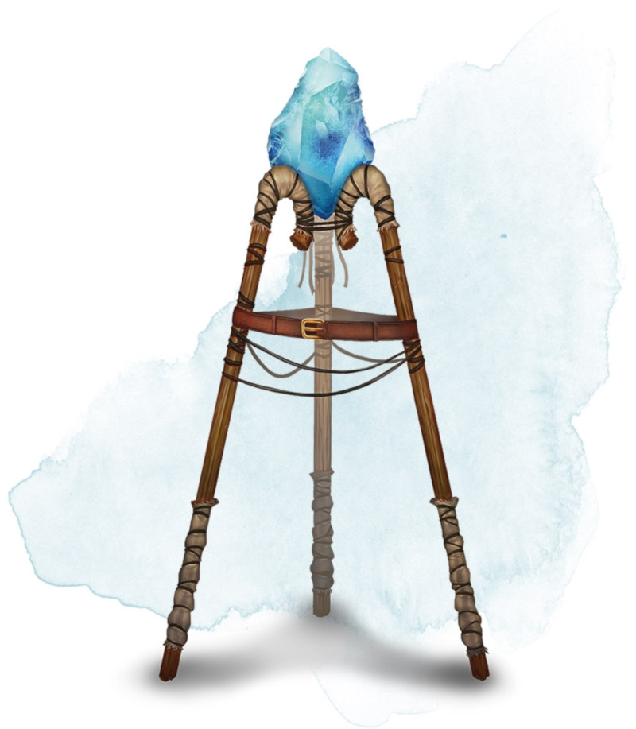

Gemme d'illumination
Objet merveilleux, peu commun
Ce prisme possède 50 charges. Tant que vous le tenez, vous pouvez utiliser une action pour prononcer l'un des trois mots de commande et ainsi provoquer l'un des trois effets suivants :
• Premier mot de commande : la gemme se met à émettre une forte lueur dans un rayon de 9 mètres et une faible lueur dans un rayon supplémentaire de 9 mètres. Cet effet ne dépense pas de charge. Il perdure jusqu'à ce que vous utilisiez une action bonus pour répéter le mot de commande ou jusqu'à ce que vous utilisiez une autre fonction de la gemme.
• Second mot de commande : Ce mot dépense 1 charge. La gemme tire un puissant rayon de lumière sur une créature que vous pouvez voir et se trouvant dans un rayon de 18 mètres de vous. La créature doit réussir un jet de sauvegarde de Constitution DD 15 sous peine d'être aveuglée pendant 1 minute. La créature peut retenter son jet de sauvegarde à la fin de chacun de ses tours, mettant un terme à l'effet qui l'affecte en cas de réussite au jet.
• Troisième mot de commande : Ce mot dépense 5 charges. La gemme rayonne d'une lumière aveuglante dans un cône de 9 mètres dont elle est l'origine. Chaque créature présente dans le cône doit effectuer un jet de sauvegarde comme si elle était la cible d'un rayon lumineux créé par le second mot de commande.
Lorsque toutes les charges de la gemme sont dépensées, la gemme devient un joyau non magique d'une valeur de 50 po.
• Premier mot de commande : la gemme se met à émettre une forte lueur dans un rayon de 9 mètres et une faible lueur dans un rayon supplémentaire de 9 mètres. Cet effet ne dépense pas de charge. Il perdure jusqu'à ce que vous utilisiez une action bonus pour répéter le mot de commande ou jusqu'à ce que vous utilisiez une autre fonction de la gemme.
• Second mot de commande : Ce mot dépense 1 charge. La gemme tire un puissant rayon de lumière sur une créature que vous pouvez voir et se trouvant dans un rayon de 18 mètres de vous. La créature doit réussir un jet de sauvegarde de Constitution DD 15 sous peine d'être aveuglée pendant 1 minute. La créature peut retenter son jet de sauvegarde à la fin de chacun de ses tours, mettant un terme à l'effet qui l'affecte en cas de réussite au jet.
• Troisième mot de commande : Ce mot dépense 5 charges. La gemme rayonne d'une lumière aveuglante dans un cône de 9 mètres dont elle est l'origine. Chaque créature présente dans le cône doit effectuer un jet de sauvegarde comme si elle était la cible d'un rayon lumineux créé par le second mot de commande.
Lorsque toutes les charges de la gemme sont dépensées, la gemme devient un joyau non magique d'une valeur de 50 po.
Dungeon Master´s Guide (SRD)
